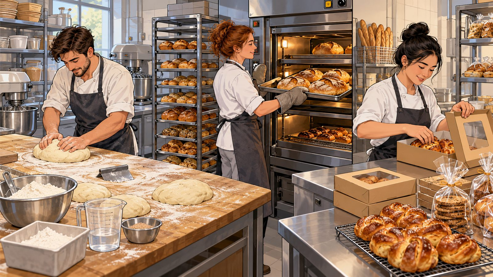

Arbeitsabläufe in der Backstube
Die Lernenden sollen mit dem Bild Tätigkeiten beschreiben, Beobachtungen von Vermutungen unterscheiden und ihre Einschätzung begründen.
Bildprompt
Erstelle eine illustrative Szene einer fiktiven Backstube als Gesprächsanlass für Lernende der Sekundarstufe II. Zeige drei erwachsene, fiktive Personen bei unterschiedlichen Arbeitsschritten: Teig vorbereiten, Backwaren aus dem Ofen nehmen und fertige Produkte verpacken. Die Arbeitsbereiche sollen klar unterscheidbar sein. Werkzeuge und Gegenstände sollen gut sichtbar sein. Stil: sachliche, detailreiche Illustration, nicht als dokumentarisches Foto gestaltet. Format 16:9. Keine Schrift, keine Logos, keine realen Personen.
Kopiert!
Arbeitsauftrag
«Beschreibe drei Tätigkeiten, die du im Bild erkennst. Formuliere anschliessend zwei Vermutungen über den Arbeitsablauf. Kennzeichne, was du beobachtest und was du nur vermutest.»
Was am Ergebnis zu prüfen war
- Fachlich: Reihenfolge der Arbeitsschritte, Werkzeuge, Hygiene (Haare, Schmuck, Kleidung).
- Didaktisch: Drei klar getrennte Bereiche, die Aufgabe lässt sich bearbeiten.
- Darstellung: Illustrationsstil wie bestellt, keine Schrift, keine Logos.
Kennzeichnung: KI-generierte Illustration, erstellt mit ChatGPT, Oktober 2026; fiktive Szene.